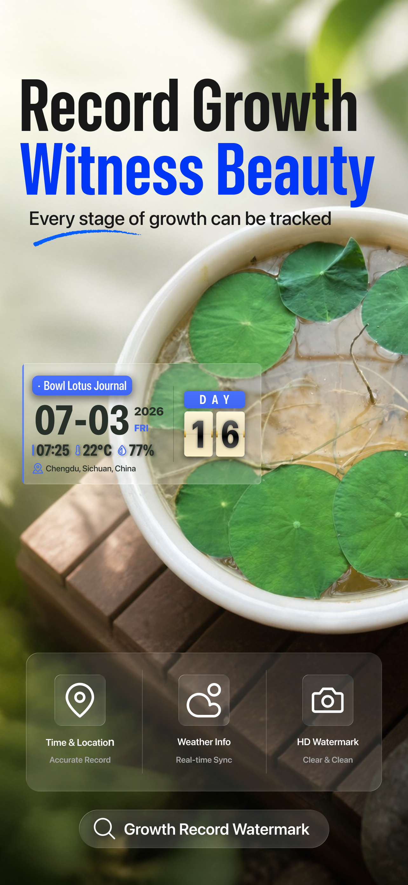
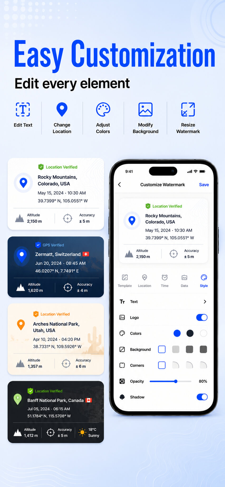

Timestamp Camera - Time & GPS+
Timestamp Camera - Time & GPS+ is a free timestamp camera app that adds real-time date, time, GPS location, map, and weather watermarks to your photos and videos.


What it stamps on every photo and video
- Location: GPS coordinates (latitude & longitude), full or short address, altitude, location accuracy, and compass direction.
- Embedded map: a live map watermark in Standard, Satellite, or Hybrid mode.
- Date & time: customizable formats (e.g. yyyy-MM-dd HH:mm:ss) and time zone display (e.g. GMT+8).
- Weather: temperature, humidity, and atmospheric pressure at the moment of capture.
Every watermark element can be turned on or off independently. Font, font size, and color are adjustable for each element. Custom location tags can be saved and reused.
Watermark templates
- Classic — the full-detail stamp with time, location, and environment data.
- Report Stamp — a layout focused on work reports and site documentation.
- GPS Verify — highlights coordinates and location accuracy for verification photos.
- Accent — a clean, minimal stamp style.
- Plant Growth Tracking — set a Day 1 date and the app automatically counts how many days your plant has been growing, shown in a long-format layout with your note, date, time, temperature, humidity, and location.
Who uses it
- Construction and field teams documenting site conditions with time and location proof.
- Property managers recording inspections with stamped photos and GPS coordinates.
- Delivery and field service workers capturing proof-of-work photos.
- Plant lovers and gardeners tracking plant growth day by day with dated photos.
- Hikers and travelers logging routes with altitude, coordinates, and compass direction.
Screenshots




Frequently asked questions
Is Timestamp Camera - Time & GPS+ free?
Yes. It is free to use, with no subscription and no in-app purchases. The app is supported by ads.
What information can it stamp on photos?
Date and time, time zone, GPS coordinates, altitude, accuracy, compass direction, full or short address, an embedded map (Standard, Satellite, or Hybrid), temperature, humidity, and atmospheric pressure.
Can I add GPS and timestamp to photos for work?
Yes. The app is built for work documentation — construction, property inspections, delivery proof, and field services. The Report Stamp and GPS Verify templates are designed for these cases.
Does it work on videos?
Yes. Watermarks are applied in real time to both photos and videos.
Can it track plant growth?
Yes. The Plant Growth Tracking template counts the days since your set Day 1 date and stamps the day count, your note, date, time, temperature, humidity, and location on each photo.
Does the app work offline?
No. An internet connection is required, since map, address, and weather data are fetched in real time.